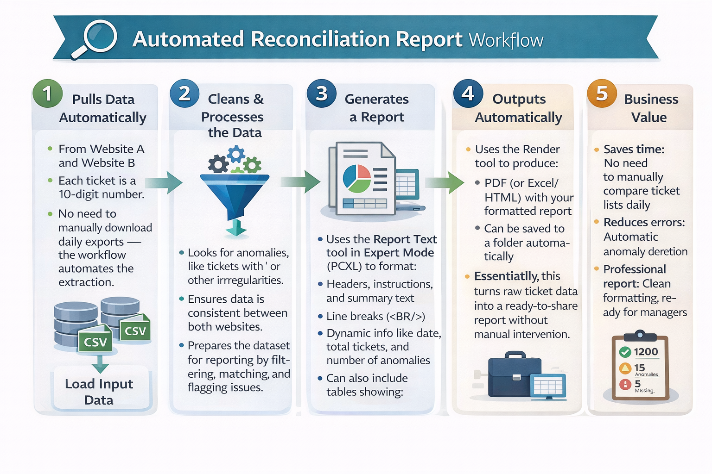
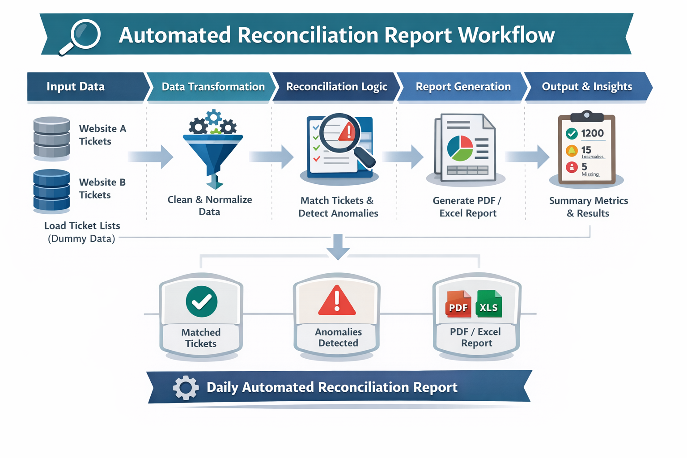

Automated Reconciliation Report Workflow – Driving Accuracy and Operational Efficiency
Designed and implemented an Alteryx workflow to automate ticket reconciliation between multiple systems, detect anomalies, and generate a daily report. The workflow uses dummy data in the portfolio version to demonstrate logic and best practices, while production data and company-specific implementations remain confidential and company-owned.
Purpose
- Automate daily reconciliation of tickets across multiple systems
- Identify anomalies such as missing or malformed tickets (e.g., tickets containing unexpected characters)
- Provide a structured, ready-to-share report for managers and stakeholders
Key Features
- Automates data extraction, transformation, and reconciliation from multiple sources
- Detects anomalies and flags inconsistencies for audit purposes
- Generates a formatted report (PDF/Excel) with dynamic text, tables, and summaries
- Fully designed logic using dummy data for portfolio-safe demonstration
- Scalable workflow logic that can be adapted to other reconciliation processes
Impact & Benefits:
- Reduces manual reconciliation effort by **over 80%**, saving multiple hours per day
- Increases accuracy and reduces human errors in daily reporting
- Provides **quantifiable insights** with anomaly counts, matched/missing tickets, and summary metrics
- Demonstrates advanced workflow design, automation, and problem-solving skills without exposing sensitive company data
Workflow Diagram
⚠️ **Note:** This repository contains a **portfolio version of a workflow I personally designed**. It uses **dummy data for demonstration purposes**. The production workflow I created is LOB-specific hence implemented differently and separately in the company environment for operational use.
Workflow Steps (Scalable Version)
- Input Data: Load ticket lists from multiple sources (dummy CSVs)
- Data Transformation: Normalize formats, remove invalid characters, and prepare data for comparison
- Reconciliation Logic: Match tickets, detect anomalies, and flag missing or malformed entries
- Report Generation: Use Report Text and Table tools with PCXL formatting to create a clean, structured report
- Output:
- PDF/Excel report summarizing reconciled tickets, anomalies, and statistics
- Summary metrics for managers, including total tickets processed, anomalies found, and error trends